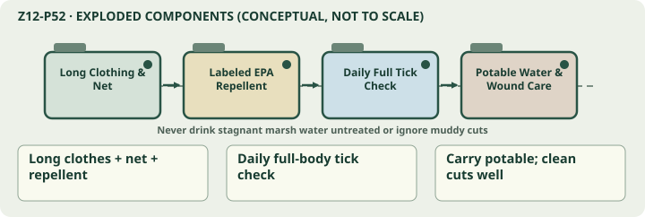

Z12-P52 · Extreme environments · New manuscript
Protect against wetland biting insects, ticks and stagnant water hazards
Reduce vector-borne illness, skin infection and water contamination risks in warm-season marshes and swamps.
When it applies · Spring through autumn travel across boreal bogs, floodplains, marshes and humid wetlands.
Equipment · EPA-registered insect repellent (per label), head net/long breathable sleeves, tick check mirror/tweezers and verified water supply.

Actions
- Wear light-colored long sleeves, tucked pants and a fine head net paired with EPA-registered repellent applied strictly per label instructions to reduce mosquito, blackfly and tick bites—inspect entire body and hairline daily for ticks.[X13, ED]
- Treat warm stagnant wetland water as high-risk for heavy organic load, protozoan cysts and potential harmful algal blooms—prefer carried potable reserves or screened flowing sources, and never drink stagnant marsh water untreated.[X13, W15, W16, W24]
- Clean minor scratches promptly with confirmed potable water and cover cleanly because warm muddy wetland water carries bacteria that infect open cuts rapidly.[W29, X13, T01]
Failure recognition · Drinking dark bog tea untreated, wearing shorts in tall marsh sedge without checking for ticks or ignoring muddy scrapes until infected.[X13, W09, W29]
Verify · Confirm full physical insect/tick barrier, daily tick check routine and confirmed potable water plan before entering warm wetlands.[X13, W09, ED]
Stop or change course · Expanding rash, fever after tick exposure, severe allergic swelling or spreading wound redness requires prompt medical evaluation.[T01, T02, X13]
Evidence and editorial notes
- T01 · American Red Cross · First Aid Steps (current web edition)
- Section: First Aid Steps > Check the scene; check the person · Conditions: Lay responder in United States; assess safety before contact
Support: Check scene safety, responsiveness, breathing and immediately life-threatening conditions.
Limitations: Lay guidance does not replace advanced clinical or rescue protocols. · Conflicting evidence: None; universal first-response opening gate.
Editorial note: Anchors scene-safety-first rule across Z01. · Specialist reviewer: EMS and wilderness medicine
Primary source · checked 2026-11-24 - T02 · American Red Cross · First Aid Steps (current web edition)
- Section: First Aid Steps > Call 9-1-1 · Conditions: Lay emergency response to unresponsiveness, abnormal breathing or severe bleeding
Support: Activate EMS and get needed equipment. Follow dispatcher directions and act within training.
Limitations: Remote locations may delay EMS arrival, requiring sustained stabilization after activation. · Conflicting evidence: None; aligns with NPS-E.
Editorial note: Mandates early emergency activation and dispatcher adherence. · Specialist reviewer: EMS and wilderness medicine
Primary source · checked 2026-11-24 - W09 · CDC · Water Treatment Options When Hiking, Camping, or Traveling (current web edition)
- Section: Overview and water treatment methods · Conditions: Hiking or camping where no safe source is confirmed
Support: Even clear water can contain germs. Assess the supply and carry safe water or an appropriate treatment method.
Limitations: Visual clarity never detects microbes or dissolved chemical contaminants. · Conflicting evidence: None across CDC/NPS/EPA sources.
Editorial note: Reinforces clarity-is-not-potability invariant across all Z04 cards. · Specialist reviewer: Drinking-water safety and public health
Primary source · checked 2026-11-24 - W15 · US EPA · Learn About Harmful Algae, Cyanobacteria and Cyanotoxins (current web edition)
- Section: Cyanotoxins and water treatment · Conditions: Surface water with discolored scum, mats, foul odor, or active HAB advisory
Support: Do not use a suspect bloom as a drinking-water source. Routine field microbial treatment is not a validated method of removing cyanotoxins.
Limitations: Cyanotoxins can persist in visually clear water after a bloom dissipates. · Conflicting evidence: Contradicts naive boil-everything advice; CDC/EPA HAB warnings explicitly prohibit boiling HAB water.
Editorial note: Establishes HABs as a chemical-toxin rejection trigger, not a microbial boil target. · Specialist reviewer: Environmental health and drinking-water safety
Primary source · checked 2026-11-24 - W16 · U.S. EPA · Harmful Algal Blooms and Cyanotoxins FAQ (2016)
- Section: Can I boil my water to make it safe to drink? · Conditions: Suspected cyanotoxins or applicable do-not-drink water advisory
Support: Boiling does not remove cyanotoxins and can increase their concentration. Follow the advisory and use an approved alternate source.
Limitations: Do not infer treatment capability or absence of toxin from visual appearance. · Conflicting evidence: See A02 claim audit for boundaries.
Editorial note: Supports regional Upper Midwest lake/pond source screening in summer and autumn. · Specialist reviewer: Environmental health and public health
Primary source · checked 2026-11-25 - W24 · USGS · Turbidity and Water (current web edition)
- Section: Turbidity and Water · optical definition and causes · Conditions: Cloudy, silt-laden, or storm-runoff streams and lakes
Support: Turbidity measures light scattering. Clay, silt and organic or biological material can contribute to turbidity.
Limitations: The USGS measurement is not evidence of potability, actual device clogging, or shielding magnitude. Follow validated treatment guidance. · Conflicting evidence: None; supports physical mechanism of pre-clarification.
Editorial note: Explains physical failure of filters and UV in turbid storm runoff. · Specialist reviewer: Hydrology and drinking-water treatment
Primary source · checked 2026-11-24
Current assessment · A04-W24 (2026-11-25) · Bounded support confirmed (A04): Scattering and contributors are supported. Turbidity cannot identify specific contaminants or clear potability. Limits: Specialist review PENDING (Hydrology and drinking-water treatment); publication HOLD. All release decisions pending. - W29 · CDC · How to Make Water Safe in an Emergency (2024-09-19)
- Section: Use safe water for drinking, brushing teeth and food preparation · Conditions: Applicable emergency-water advice and permissible uses under active local advisory
Support: Use confirmed safe water for oral and food-contact tasks. Follow current local instructions for each use.
Limitations: Infant formula requires separate P26 conditions. Wound care requires the appropriate care source. · Conflicting evidence: See A02 claim audit for boundaries.
Editorial note: Separates potable-required tasks from non-potable utility uses. · Specialist reviewer: Public health and wilderness medicine
Primary source · checked 2026-11-24
Current assessment · A04-W29 (2026-11-25) · Bounded support newly confirmed (A04): Confirms safe water for oral and food-contact uses and the local-advisory boundary. Limits: Specialist review PENDING (Public health and wilderness medicine); publication HOLD. All release decisions pending. - X13 · NPS · Wetlands Subject Guide (current web edition)
- Section: Wetlands > Footing, Immersion, Insects and Water Quality · Conditions: Travel near marshes, swamps, fens and slow-water estuaries
Support: Wetlands combine wet-cold immersion risk, concealed snags, unstable muck that drains energy rapidly, insect-borne disease exposure and high-organic/stagnant water requiring strict treatment or alternate sourcing.
Limitations: Footwear immersion and trench-foot/cold injury occur even in mild temperatures during prolonged wetland exposure. · Conflicting evidence: None; complements EPA-WETLAND and W16.
Editorial note: Grounds wetland navigation, foot-care and cold-wet exposure cards. · Specialist reviewer: Wilderness safety and wetland operations
Primary source · checked 2026-11-24
Source lineage · NPS wetlands and CDC water/vector safety; new manuscript · Classification · New manuscript.